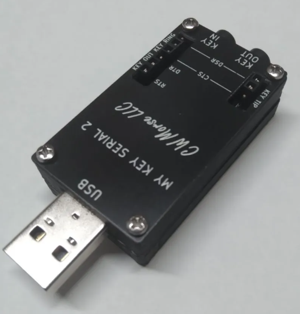
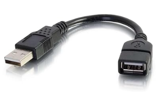
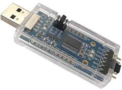

|
<< Click to Display Table of Contents >> Navigation: Technical > RigPi Remote Keyer |
See also: Keyer Advanced Radio
The RigPi Remote Keyer feature allows you to operate CW from a remote location using a paddle, bug or straight key. A RigPi with a modified Keyer board is required for early RigPi's) at both ends (see schematic, below). One of several keying options can be used at the remote end:
At radio end:
1.Radio RigPi1-4
A.RigPi 4 software
B.Raspberry Pi 3B+ or 4B
C.Audio Board or CODEC (for VoIP) and CW Board
At remote key end (2 options):
1.RigPi 1-4 (same as radio end)
Or
2.RigPi Hub Windows program
A.RigPi Hub 2.4.0 or later
B.Control the radio through RigPi Hub with your favorite logging program
C.Send CW from most logging programs, straight key, keyboard key or mouse button, or electronic key
D.Requires Windows Mumble client for VoIP
A RigPi Keyer can serve one of four functions as determined by the Keyer Fn in SETTINGS->Keyer. See below the table for examples.
Keyer Function |
Keying |
Note |
Normal
One RigPi with keying capability. |
Key your transmitter from any browser using Tuner macros, the Keyer window, or from RigPi Hub. |
A Windows keying program using RigPi Hub 2.4 (or later) for keying. In RigPi Hub, set the RigPi IP, RigPi Control Port to 3000n, and CW Port to 3000n where n is the account number. |
Remote/Radio Keyer Manual Keying
Two RigPi's, each with modified Keyer board |
Requires two RigPi's, each with a Keyer board. Connect your paddle, bug, straight key, or RigPi Hub to the Remote RigPi . The Remote RigPi controls the Radio RigPi. See Getting Started with Two RigPi's, below. |
A Windows keying program can be connected to the Radio RigPi using RigPi Hub 2.4 for keying in lieu of a Remote RigPi.
Set the CW port, 30039 + n, when n is the account number. which is used for Radio Keyer data. Set the IP address for the Radio Keyer RigPi in Remote Keyer settings. Use the RigPi Radio LAN IP (when at home) or the RigPi Radio WAN IP (when away). If using a bug or straight key, connect the key using the tip and sleeve of the PADDLE connector.
Use Vibrobug in the Radio RigPi SETTINGS->Keyer->Paddle Md.
Use Remote Keyer at the Remote end and Radio Keyer at the Radio end in SETTINGS->Keyer->Keyer Fn. |
External CTS, Manual Keying
One Radio RigPi with Keyer board. No Remote. |
Key CW from an external keying source connected to the CTS connection on a serial-to-USB adapter. Connect the RTS pin to the transmitter keying jack (through an appropriate interface circuit). See below for more about adapters. Remote keying is not supported. |
Set External CTS in RigPi Advanced (Keyer) and Keyer settings (Keyer Fn). Select the USB adapter in SETTINGS->Advanced Settings->Keyer Port.
Use Radio Keyer in SETTINGS->Keyer->Keyer Fn. |
Direct IP Connection (not needed as a separate function in the Keyer Fn list)
Keyer required at Radio end, optional at Remote end. |
Requires two RigPi's, or RigPi Hub at Remote, with a Keyer at the radio end. Enter the <Radio RigPi LAN>:<port> or <WAN IP>:<port> in the Remote Advanced Settings->Keyer Port OR Remote RigPi SETTINGS->Keyer Settings->Rad Port and Radio IP boxes. If a Windows logging program you are using supports using an IP for WinKeyer keying, you can use that program rather than a Remote RigPi or RigPi Hub.
If you have a Keyer at the remote end, the Keyer Settings option provides a sidetone. You will not get a sidetone if you use the Advanced Radio option. |
RigPi Hub running under Windows can be used in place of a second RigPi. For that option you can use the RigPi Hub sidetone or the radio's Mon function (if supported in your radio) to provide a sidetone.
|
Getting Started with Two RigPi's
Confirm that the RigPi Keyer is working correctly in each RigPi using the Normal Keyer function. If using two RigPi's on the same local network, use the IP address for each RigPi rather than the domain name. You can change the domain name in one RigPi using sudo raspi-config in a terminal on that RigPi. Change it to something like "radio.local' or 'remote.local'.
Radio Keyer
▪Start the Radio RigPi in any browser.
▪In Settings>Advanced Radio enter the settings for your radio.
▪Select RigPi Keyer in the Key list.
▪In Settings>Keyer, set the Keyer Fn to Normal and put a check in the Enable Sidetone check box.
▪Connect a cable from the RigPi KEY connector to the CW keying jack on your radio.
▪Click Connect Radio on the Tuner window. The frequency shown should be the same as shown on the radio.
▪Click Test Keyer in the Keyer Settings window. You will hear two Morse V characters indicating the Keyer is functioning correctly.
▪Connect a Keyer paddle to the PADDLE connector, open the Keyer window and send a few characters. If you wish to use a Bug or straight key, connect it between tip and sleeve on the connector and set the Paddle Md to Vibrobug.
▪The Radio Keyer is now set for the Normal mode.
Remote Keyer
▪RigPi is running using rigpi4.local on the Radio and Remote RigPi's. This will cause a conflict when both are connected to the same LAN. To resolve this conflict, open the Raspberry Pi desktop. Go to Menu>Preferences>Raspberry Pi Configuration. Enter rigpi4R.local in the Hostname, click OK, and give permission to reboot. From now on you can access the Remote RigPi by using rigpi4R.local.
▪Start the Remote RigPi in any browser.
▪In Settings>Advanced Radio select the Hamlib>Dummy radio.
▪Select RigPi Keyer in the Key list.
▪In Settings>Keyer, set the Keyer Fn to Normal and put a check in the Enable Sidetone check box.
▪Click Connect Radio in the Tuner window. The frequency shown should be 145.000.000 MHz.
▪Click Test Keyer in Settings>Keyer. You will hear two Morse V characters indicating the Keyer is functioning correctly.
▪Connect a Keyer paddle to the PADDLE connector, open the Keyer window and send a few characters. If you wish to use a Bug or straight key, connect it between tip and sleeve on the connector and set the Paddle Md to Vibrobug.
Setting up Remote Keying with Two RigPi's
Once both keyers are working using the Normal function, we will set up the remote keyer connection through your local network. A dedicated port 30040 (default, use 30039 + account number) is used for the CW data.
Radio RigPi Keyer
▪In Settings>Keyer select Radio Keyer in the Keyer Fn list.
▪Settings>Keyer, enter a port in the Port box (30040 is recommended, must be the same as used in Remote Keyer).
▪Click Test Keyer to register the new settings.
▪In Tuner, click Disconnect Radio and Connect Radio to start the Radio Keyer function with the new settings.
Remote RigPi Keyer
▪In Settings>Keyer select Remote Keyer in the Keyer Fn list.
▪In Settings>Keyer, enter a port in the Port box (30040 is recommended).
▪Enter the Radio RigPi LAN (or WAN) IP in the IP box.
▪Click Test Keyer to register the new settings.
▪In Tuner, click Disconnect Radio and Connect Radio to start the Remote Keyer function with the new settings.
You are all set for Remote CW. Tune your radio to the CW portion of a band and turn on VOX. With the Keyer window open on the Remote Keyer RigPi, try sending some characters. You will hear the sidetone on both keyers and your radio should transmit.
Note the following:
▪If running Remote and Radio RigPi near each other, turn off the Radio Sidetone to hear the Remote RigPi Sidetone more easily.
▪When using Remote RigPi away from home you must set up UDP port forwarding for the port you have assigned (30040).
▪When using Remote RigPi away from home you must use the WAN IP instead of the Radio RigPi LAN IP.
▪To control your radio, open any browser at the remote location and connect to rigpi4.local. Port 80 must be forwarded to connect through your router if you are away from home. Use the WAN IP address of your Internet connection to connect.
RigPi Keyer Board Modifications
Two jumpers must be added to the RigPi Keyer board to allow remote keying, see below. This only applies to early production RigPi 1 Keyer boards. The jumpers have been added to later boards.
Remote Keying from a Windows Computer
Remote CW can be keyed from most Windows logging programs through a RTS or DTR keying input to RigPi Hub, or through WinKeyer compatibility. RigPi Hub 2+ is a Windows Virtual Port program that can control RigPi from up to 4 Windows programs. It is available for free from the RigPi web site: https://rigpi.net
Morse Keyer is a Windows programs that can connect to RigPi Hub. Using Morse Keyer you can send CW through RigPi Hub to a radio using a straight key, paddle, bug or even mouse buttons. A sidetone is provided in RigPi Hub. Select a free port in RigPi Hub, open it, then connect Morse Keyer to that port.
You can use a decommissioned mouse to connect to a physical key using Morse Keyer. It is possible to connect two mice to a computer although they control the same mouse pointer. The downside to this approach is that you must move the mouse pointer over the "keypad" on the Morse Keyer window to send using a key using the re-purposed mouse. Select a free port in RigPi Hub, open it, then connect Morse Keyer to that port.
Using two USB-to-serial adapter cables you can key Morse Keyer through a USB port and thence key RigPi Hub. See the Morse Keyer web Help page for details on connecting your key to Morse Keyer using a USB/serial connection.
https://morse-rss-news.sourceforge.net/
RigPi Hub can use a physical serial port in addition to virtual ports. Jumper the keying output from Morse Keyer (pin 4 on a DB-9 connector) to the CTS input on the second cable. See RigPi Hub Help for details.
Using remote CW with RigPi Hub
RigPi Hub 2+ can be used with RigPi to send CW from a Windows program through a virtual port. Two ways to send CW are provided with RigPi Hub: element based (key-down and key up times for each element are sent); character based (ASCII characters are sent to RigPi where they are converted to CW).
Element based keying requires a second port (in addition to a radio control port) for keying purposes. Note there is a delay keying the radio. This delay allows the key-down lengths to be faithfully produced for each character. RigPi Hub uses adaptive timing to watch for word spaces. When a word space is recognized, RigPi Hub sends the keying data to RigPi for that character.
The default port for element based keying in 30040 (for account 1, use 30041 for account 2, and so on). You must use a RigPi Keyer board at the radio end, set up for Radio Keyer in SETTINGS->Keyer->Keyer Fn. Open port 30040 for UDP in your router when operating away from home.
In addition to a manual keyer or logging program, here are additional ways you can key using RigPi Hub:
•Click the Key button on RigPi Hub with your mouse
•Press the "=" key on your keyboard (upper right on the keyboard)
•Press the "`" key on your keyboard (upper left on the keyboard)
Configure your program to use DTR or CTS for transmitting CW. Assign a RigPi Hub virtual port to the CW keying function of the external program.
The following programs have been tested using element based CW:
CommCat (discontinued)
Ham Radio Deluxe/Digital Master
N1MM
DXLog
Morse Keyer
RigPi Hub can connect to a physical port for keying from an external device such as an electronic keyer, straight key or bug. Select the serial port you want to use in the CW group and click Connect.
You can use a USB-to-serial adapter to gain access to the RTS, DTR and CTS control lines.
The CWMorse MY-KEY-SERIAL2 USB to key interface contains the interface circuits to transmit and key Morse code.

Because of its width, use a short extension cable so other USB ports won't be blocked. Here is one I use:

Here is another adapter I have tested. It works well by grounding the CTS line using an external key.

Character based keying
Character based keying does not require a separate port, it uses the standard RigPi Hub CAT port 30001. Port 3001 assumes you are using RigPi Account 1. Use port 30002 for account 2 and so on.
Send CW from one of several popular logging programs. The program must support Winkeyer-compatible keying. Set up a RigPi virtual port for this purpose at 1200 Baud. Connect to this port from the Winkeyer interface in the program you are using.
The following programs have been tested using character based CW:
CommCat (discontinued)
Ham Radio Deluxe/Digital Master
N1MM
WK3 Demo by K1EL
Ham Radio Deluxe (character mode)
Confirm that CW is working in RigPi. No special RigPi settings are required to use character mode remote CW.
Start RigPi Hub and set up one virtual port for radio control at 38400 Baud and a second virtual port for CW at 1200 Baud.
Start Ham Radio Deluxe using a Kenwood TS-2000 radio selection. Start DM780.
In DM780 Modes, select CW (WinKey).
In Winkey->Keyer settings, select the port you configured for 1200 Baud. Click Connect.
In DM780->Winkeyer->Speeds, remove the check in Track Changes, if there.
In DM780->Winkeyer->Keyer, click Test. The RigPi Keyer should send TEST DE DM. Close Winkeyer settings.
Use the CW functions in DM780 as you normally would. There is no sidetone when operating in this way. You can turn on your radio's sidetone and hear it through Mumble. The RigPi CW indicator in the lower right hand corner of the RigPi Hub window shows when CW is being sent.
N1MM (character mode)
Confirm that CW is working in RigPi. No special RigPi settings are required to use character mode remote CW.
Start RigPi Hub and set up one virtual port for radio control at 38400 Baud and a second virtual port for CW at 1200 Baud.
Start N1MM using a Kenwood TS-2000 radio selection.
In Config->Configure Ports, set up a separate port for WinKeyer. Put a check in the WinKey box.
In Config->Winkey, select Ignore Winkey Speed Pot.
In Winkey->Keyer settings, select the port you configured for 1200 Baud. Click Connect..
Use the CW functions in N1MM as you normally would. There is no sidetone when operating in this way. You can turn on your radio's sidetone and hear it through Mumble. The RigPi CW indicator in the lower right hand corner of the RigPi Hub window shows when CW is being sent.
K1EL WK3 Demo (character mode)
Confirm that CW is working in RigPi. No special RigPi settings are required to use character mode remote CW.
Start RigPi Hub and set up a virtual port for CW at 1200 Baud.
Start WK3 Demo..
In Setup->Com Port Settings, select the virtual port you set up for 1200 Baud. Click Done.
Click the Open button to initialize the keyer.
Use the CW functions in WK3 Demo as you normally would. There is no sidetone when operating in this way. You can turn on your radio's sidetone and hear it through Mumble. The RigPi CW indicator in the lower right hand corner of the RigPi Hub window shows when CW is being sent.
CommCat (character mode)
(Note: CommCat has been discontinued.)
Confirm that CW is working in RigPi. No special RigPi settings are required to use character mode remote CW.
Start RigPi Hub and set up one virtual port for radio control at 38400 Baud and a second virtual port for CW at 1200 Baud.
Start CommCat using a Kenwood TS-2000 radio selection.
In File->Settings->Radio/Ant->CW, select Winkeyer and the port you set up for 1200 Baud.
Use the CW functions in CommCat as you normally would. There is no sidetone when operating in this way. You can turn on your radio's sidetone and hear it through Mumble. The RigPi CW indicator in the lower right hand corner of the RigPi Hub window shows when CW is being sent.
Using the Radio Sidetone with Remote CW
Many radios provide a sidetone while sending CW. It may be possible to send the sidetone from the radio to the remote Mumble. For example, the Icom IC-7300 provides this capability. To enable sidetone through the audio CODEC, go to MENU->SET->Connectors->ACC/USB AF Beep/Speech... Output and set the option to ON. You will want to set the option to OFF for speech operation. For other radios, check your manual and menu settings to see if this is possible.
Examples
Connect Remote RigPi (rigpi4.local) Keyer to Radio RigPi (radio4.local) Keyer, local network, character keying.
If you are using the Remote RigPi on the same LAN as the Radio RigPi, to prevent conflicts change the Hostname for the Remote RigPi to something else such as remote.local. Do this by using the RaspBerry Pi desktop and opening Terminal. In Terminal type sudo raspi-config. Go to System Options->Hostname and follow the instructions.
Remote RigPi (account 1) (note you can use any accounts you wish by adjusting the Rad Port numbers):
Advanced Settings:
Keyer RigPi Keyer
Keyer Port /dev/ttyS0
Keyer Settings:
Keyer Fn Remote Keyer
Rad Port 30003 port for third account (30003)
Radio IP 172.16.0.62 Radio4.local Radio IP
Radio RigPi (account 3)
Advanced Settings:
Keyer RigPi Keyer
Keyer Port /dev/ttyS0
Keyer Settings:
Keyer Fn Radio Keyer
Rad Port 30003
Connect USB CTS device, local network, element keying.
Radio RigPi (account 1):
Advanced Settings:
Keyer Externl CTS
Keyer Port /dev/serial/by-id/usb_USB_Serial-if00-port0 USB device
Keyer Settings:
Paddle Md Vibrobug
Keyer Fn Radio Keyer
Rad Port Empty (Ignore)
Remote RigPi
Advanced Settings:
Keyer N/A No remote
Keyer Port N/A No remote
Keyer Settings:
Keyer Fn N/A No remote
Rad Port N/A No remote
Connect two RigPi's, local network, element keying.
Remote RigPi (account 1)
Advanced Settings:
Keyer RigPi Keyer
Keyer Port /dev/ttyS0
Keyer Settings:
Paddle Md Vibrobug
Keyer Fn Remote Keyer
Rad Port 30040 (acct 1) 30041 (acct2) ...
Radio RigPi (account 1):
Advanced Settings:
Keyer RigPi Keyer
Keyer Port /dev/ttyS0
Keyer Settings:
Paddle Md Vibrobug
Keyer Fn Radio Keyer
Rad Port 30040 (acct 1) 30041 (acct2) ...